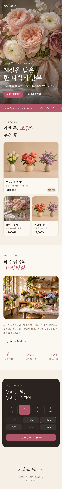
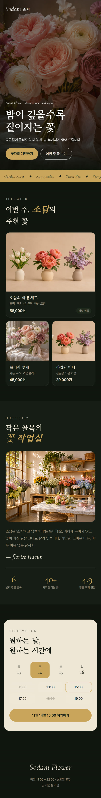

AI 자료실 No.007
말 한 줄로 만든 꽃집 홈페이지 — 의뢰서 양식과 실제 결과 주소
AI My Ground 쇼츠에서 보여 드린 꽃집 홈페이지입니다. 실제로 작동하는 페이지를 열어 볼 수 있고, 같은 결과를 내는 의뢰서 양식을 그대로 드립니다.
직접 만들어 보고 정리한 자료입니다. 내 작업물에는 자유롭게 쓰셔도 됩니다. 다만 이 지시문과 내용을 그대로 옮겨 다른 자료·콘텐츠로 다시 배포하는 것은 삼가 주세요. 사진은 본인 사진이나 사용 허락을 받은 사진만 쓰세요.
핵심 살펴보기
- 가게 이름과 분위기 두 가지만 적어도 페이지가 나옵니다.
- 메뉴·가격·영업시간을 의뢰서 양식으로 주면 브랜드처럼 보이는 결과가 나옵니다.
- "밤 분위기로 바꿔 줘"처럼 말로 고치면 디자인이 통째로 바뀝니다.
영상으로 먼저 보기
쇼츠에서 보여 드린 장면입니다. 아래에서 한 단계씩 똑같이 따라 하시면 됩니다.
먼저, 이런 결과가 나옵니다
실제로 만든 페이지입니다. 눌러서 휴대폰으로 직접 열어 보세요.


가게 이름·메뉴·가격은 예시로 만든 가상의 꽃집입니다.
가장 빠르게
1. 말 한 줄로 시작하기
- 글과 코드를 쓰는 AI 채팅창(예: 클로드)을 엽니다.
- 아래 한 줄에서 [ ]만 바꿔 보냅니다.
- 답에 나온 화면(미리보기)을 확인합니다.
[ ]만 바꿔서 쓰기
동네 꽃집 홈페이지 만들어 줘. 가게 이름은 [가게 이름], 분위기는 [분위기, 예: 따뜻하고 고급스럽게].
성공 확인 사진·메뉴·예약 버튼이 들어간 한 페이지가 미리보기로 보이면 됩니다.
결과가 달라지는 곳
2. 의뢰서 양식으로 다시 주기
한 줄로 만든 결과가 평범하다면, 위 결과물을 만든 의뢰서 양식을 쓰세요. 메뉴·가격·숫자를 실제 내 가게 것으로 채우는 것이 핵심입니다.
[ ]만 채워서 쓰기
[가게 이름] 홈페이지를 휴대폰 화면 기준 한 페이지로 만들어 줘. - 분위기: [예: 따뜻하고 고급스럽게, 잡지 같은 느낌] - 첫 화면: 큰 사진 + 한 줄 문구 + [예약하기] 버튼 - 이번 주 추천 메뉴 3개: [이름 · 가격] - 가게 이야기 한 단락 + 숫자 3개(예: 6년째·매주 40종·평점 4.9) - 예약: 날짜·시간 고르는 칸 - 영업시간: [시간 · 휴무일] - 흔한 AI 홈페이지처럼 보이지 않게: 보라색 그라데이션·이모지 아이콘 금지, 글꼴 두 종류만
성공 확인 첫 화면만 봐도 무슨 가게인지, 어디를 눌러 예약하는지 바로 보이면 됩니다.
사진은 직접 찍은 가게·상품 사진을 올려서 "이 사진으로 바꿔 줘"라고 하면 가장 좋습니다.
고치기
3. 말로 고치기
디자인 감이 없어도 괜찮습니다. 바꾸고 싶은 것을 말로 하면 됩니다.
그대로 복사
지금 홈페이지를 밤 분위기로 바꿔 줘. 색은 짙은 초록과 금색, 첫 화면 사진은 어둡게, 문구도 밤에 맞게 바꾸고 영업시간은 [시간]으로.
성공 확인 색·사진 밝기·문구가 같이 바뀌면 됩니다. 위의 밤 판이 이런 요청으로 바꾼 결과입니다.
완성 후 이 세 가지만 확인하세요
- 가게 이름·전화번호·영업시간이 실제와 같은지
- 휴대폰에서 글자가 잘리거나 겹치지 않는지
- 예약 버튼이 실제로 어디로 연결되는지(만든 직후엔 모양만 있는 경우가 많습니다)
자주 묻는 것
만든 페이지를 바로 인터넷에 올릴 수 있나요?
파일로 받은 뒤 호스팅(인터넷에 올려 두는 곳)에 올려야 주소가 생깁니다. 예약·결제처럼 실제로 작동해야 하는 기능은 따로 연결이 필요합니다.
외주 대신 이걸로 끝내도 되나요?
시안(어떤 느낌으로 갈지 정하는 그림)을 먼저 뽑아 보는 데 좋습니다. 실제 운영 사이트는 예약·결제·관리까지 필요해서 전문가 손이 필요한 경우가 많습니다.